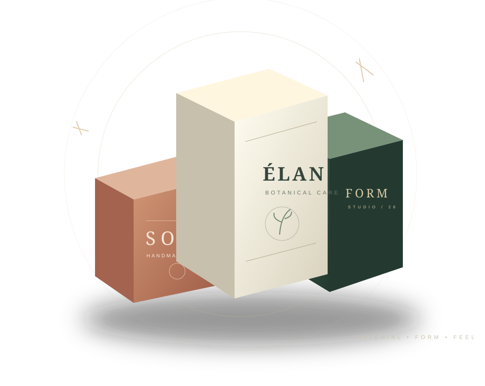

FORM 01 / FOLDING
Hộp gấp nắp gài
Gọn, linh hoạt, phù hợp với nhiều nhóm hàng bán lẻ. Quan trọng nhất là tải trọng, phần đáy và nếp gấp.
Xem cấu trúc ↗PACKAGING JOURNAL / VOL. 01 — KIẾN THỨC BAO BÌ
Một cuốn sổ tay thị giác dành cho thương hiệu và người làm sản phẩm: chọn giấy, chọn kiểu hộp, chuẩn bị file và những chi tiết quan trọng trước khi đặt in.

Không chọn giấy chỉ vì bề mặt đẹp.
Lọt lòng, cách mở, khả năng chịu lực.
Hạn chế chỉnh sửa và phát sinh.
Một thiết kế hiệu quả phải cùng lúc bảo vệ được sản phẩm, thuận tiện khi sử dụng và làm rõ nhận diện thương hiệu. Ba nhóm cấu trúc dưới đây là điểm khởi đầu.
Gọn, linh hoạt, phù hợp với nhiều nhóm hàng bán lẻ. Quan trọng nhất là tải trọng, phần đáy và nếp gấp.
Xem cấu trúc ↗
Một trải nghiệm mở nắp có chủ đích. Cấu trúc, khay đỡ và độ khít tạo cảm nhận rõ hơn hiệu ứng bề mặt.
Khám phá kết cấu ↗
Màu nền giấy có cá tính riêng. Cần thử màu mực và độ tương phản trước khi chọn thiết kế tối giản.
Tìm hiểu vật liệu ↗
Ảnh mẫu chỉ cho biết phong cách; sản phẩm thật mới cho biết hộp cần gì. Trước khi đặt in hộp giấy, nên xác định những chi tiết cơ bản sau:
Chọn nhóm sản phẩm để xem gợi ý ban đầu. Đây là khung định hướng, không phải thông số kỹ thuật cuối cùng.
Ưu tiên kích thước lọt lòng theo lọ hoặc tuýp thực tế. Với hộp gấp trưng bày, thử Ivory hoặc Duplex; nếu cần trải nghiệm mở hộp đặc biệt, cân nhắc hộp cứng có khay đỡ.
Ba bài hướng dẫn được biên soạn theo từng quyết định thực tế — từ nguyên liệu, cấu trúc đến bản yêu cầu gửi xưởng.

Đọc bản chất vật liệu theo ứng dụng, thay vì chọn giấy chỉ vì tên hoặc định lượng.
Đọc bài viết ↗So sánh thao tác sử dụng, ưu điểm và những chi tiết cần thử trên mẫu thực tế.
Đọc bài viết ↗Danh sách tích chọn tương tác và mẫu thông tin có thể sao chép để gửi nhà in.
Đọc bài viết ↗Những câu hỏi ngắn nhưng thường quyết định thời gian và chi phí của một đơn hàng.
Gửi ảnh hoặc mẫu hộp, kích thước thành phẩm, số lượng dự kiến, loại giấy nếu đã chọn, số mặt in, yêu cầu gia công và thời điểm cần hàng. Nếu chưa biết loại giấy, hãy gửi kích thước và trọng lượng sản phẩm thật để được tư vấn.
Gsm là khối lượng giấy tính theo g/m², không phải độ dày. Độ đứng hộp còn phụ thuộc cấu trúc, loại giấy, khổ hộp và cách bế gấp. Hộp cứng bồi còn có cốt hộp riêng.
Nền Kraft ảnh hưởng màu mực cảm nhận sau in. Nếu màu thương hiệu quan trọng, nên duyệt mẫu màu trên đúng vật liệu và cân nhắc phương án in hoặc xử lý nền phù hợp.
Có thể bắt đầu bằng ảnh sản phẩm, logo, nội dung bắt buộc và mẫu hộp mong muốn. Phạm vi thiết kế, chi phí và số lần chỉnh sửa nên được xác nhận trước với đơn vị in.
Đối chiếu sản phẩm thật, số lượng và mẫu tham khảo với đơn vị sản xuất. Bạn có thể tìm hiểu các phương án in hộp giấy theo yêu cầu tại Tân Hoa Mai trước khi gửi quy cách để nhận tư vấn.
Mở trang dịch vụ gốc trong tab mới